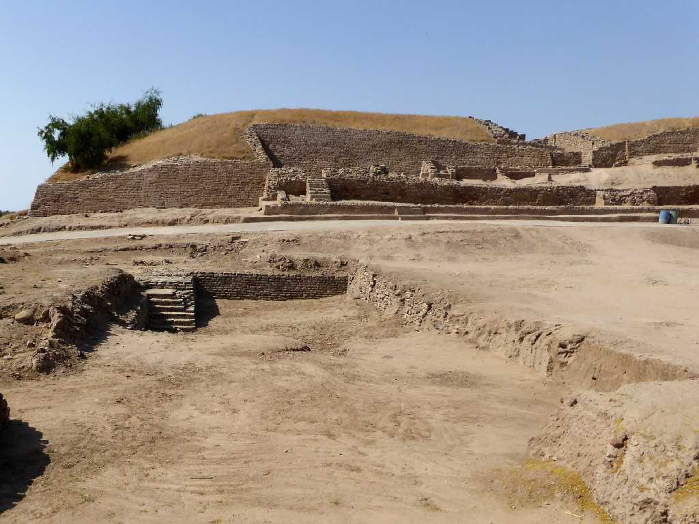
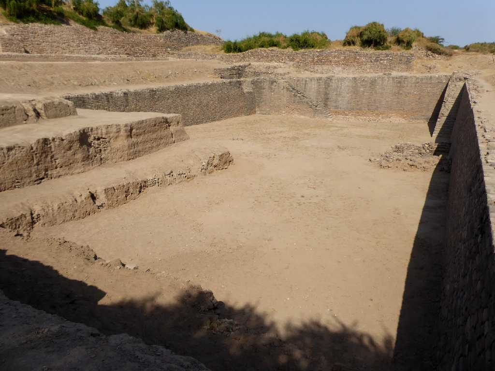
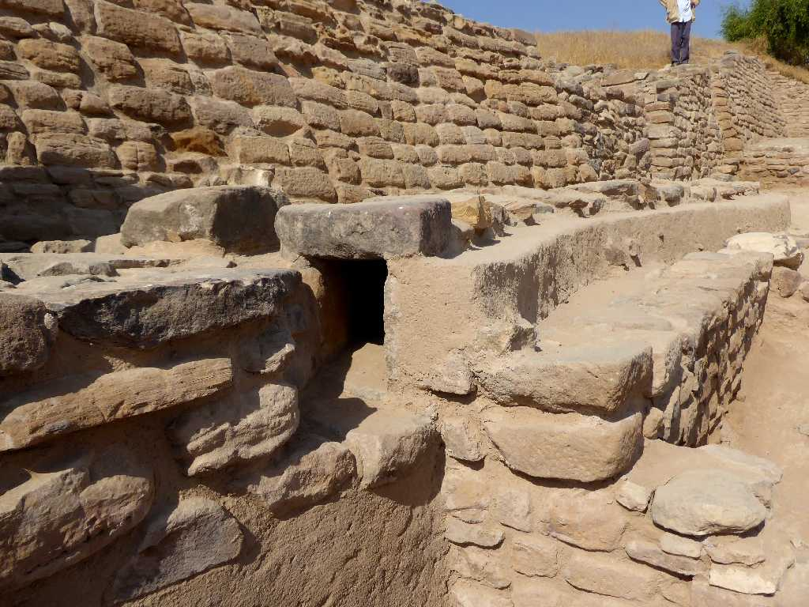
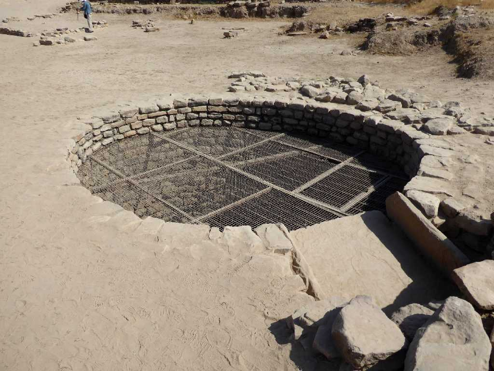
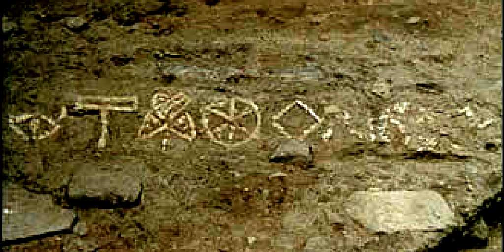
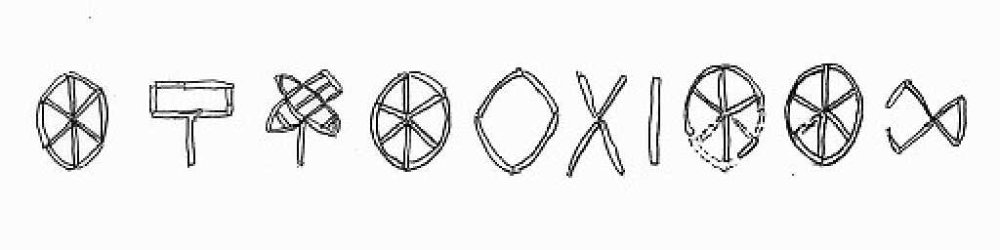
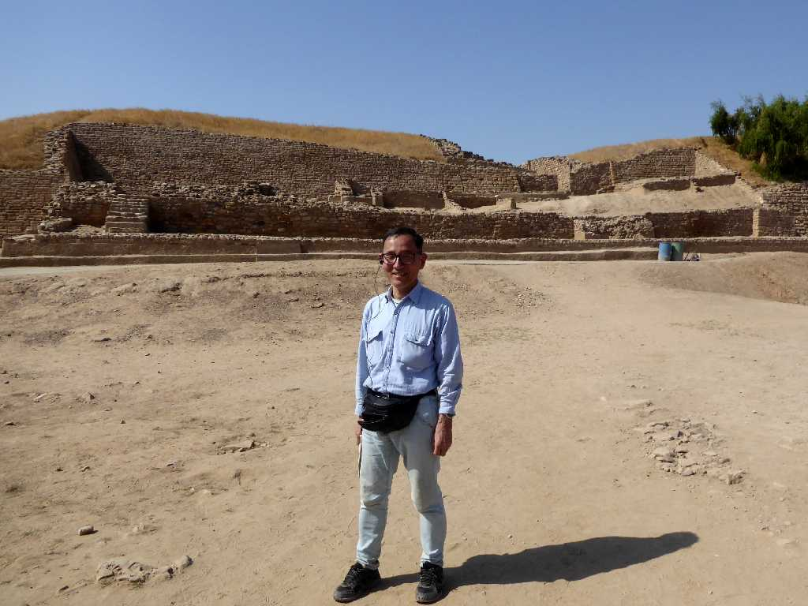
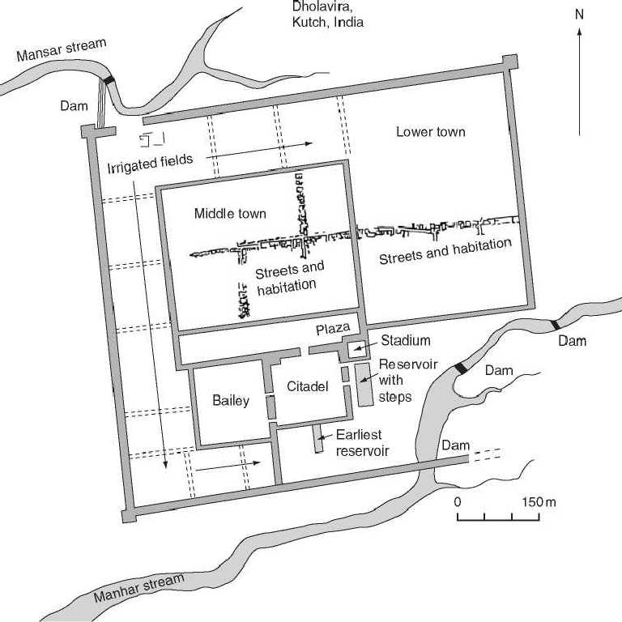

East Gate Dholavira Kutch
紀元前２,９００年頃から紀元前２,１００年頃に西アジア集落の交易地として栄えたインダス文明の大都市ドーラビーラ遺跡

Water Reservoirs
降水量が少ないためなのか城塞近くにある大貯水槽の他にも南側に巨大貯水槽が数ヶ所創られるなど１６ヶ所も確認されている

Waterway
４,５００年前の石積と水路の跡で他のインダス文明都市と異なり住居跡はレンガではなく石灰岩の石積で造られている

Well
ドーラは白の意味でビーラは井戸の意味で水を供給した直径４ｍの井戸の跡


10 Indus Scripts North Gate
木板の痕跡があることから北門に掲げられた看板と考えられている１０文字のインダス文字は未解読

January 25 2018 Dholavira
